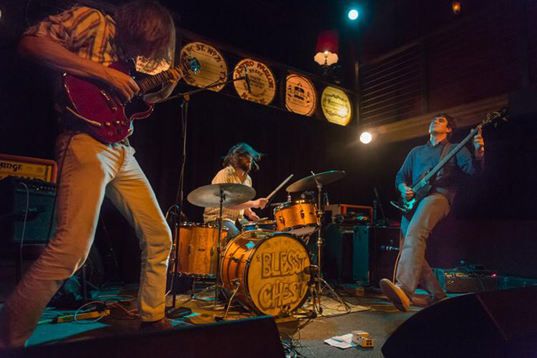
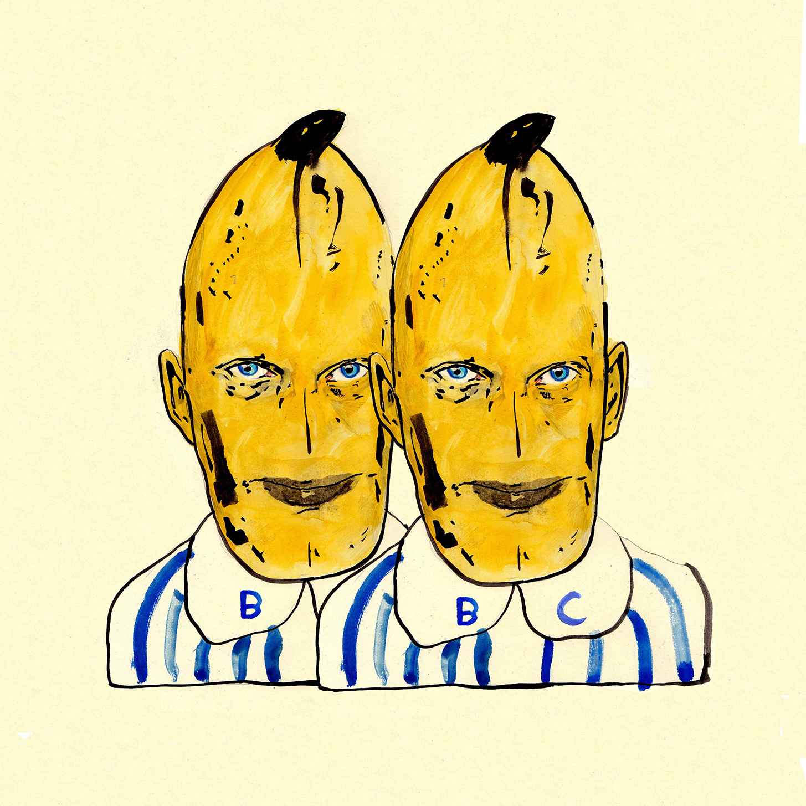

Blesst Chest
Blesst Chest is Jake, Jay, and Darrell from Portland, OR. Made up from members of Stephen Malkmus and the Jicks, The Joggers, 31 Knots, and Lips and Ribs, the band combines music and music and music journalism type write-up. Thier new album, Wish We Were There was produced by Gary Jarman (The Cribs), and mastered by Dave Fulton (Motrik).
